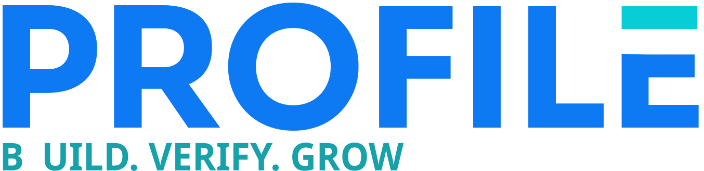

Logo system
The three supplied files, the rules that keep them from being distorted, and the one implementation pattern every surface uses. The artwork is used exactly as delivered — nothing here recolours, redraws or reconstructs it.
The assets
Three files, three jobs. Every one is scalable vector artwork with a fixed intrinsic ratio — that ratio is what protects it.
Never distorted
One rule covers almost every failure: set one dimension and let the other follow. Both examples below use the same file — the difference is entirely in how it was sized.
alt=""
style="display:block;
height:32px;
width:auto;
aspect-ratio:1352/1736;
flex:none">
Clear space and minimum size
Clear space is measured from the mark's own width, so it scales with the logo instead of needing a table of pixel values.
favicon
min. screen
app bar
sign-in
Backgrounds
The artwork is transparent and carries its own colour, so it sits on both themes unchanged. The limit is contrast against the specific surface, not the theme.
Lockups in place
Where each variant actually appears in the product, at the size it appears.